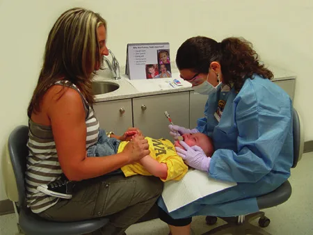

نسخه استخراجشده؛ ترجمه یا تأیید علمی انجام نشده است. وضعیت: captured
ترتیب فقط نظم نیست؛ کمتهاجمیترین کار اول انجام میشود تا اعتماد ساخته شود:
خارجدهانی: تقارن صورت، تورم، غدد لنفاوی، مفصل گیجگاهی-فکی، لبها و پوست اطراف دهان.
بافت نرم داخلدهانی: مخاط، لثه، زبان، کف دهان، فرنومها، لوزهها.
بافت سخت: دندانها، پوسیدگی، اکلوژن و فضاها.
چرا این ترتیب؟ لمس صورت و غدد لنفاوی برای کودک تهدیدآمیز نیست و فرصت میدهد به تو عادت کند. اگر از آینه در دهان شروع کنی، بخش سخت را اول انجام دادهای.
در شیرخوار: همهی اینها در وضعیت زانو به زانو انجام میشود.

سه تفاوت ساختاری که تشخیص را عوض میکنند:
مینا و عاج نازکتر — فاصلهی تا پالپ کوتاه است، پس پوسیدگی سریعتر به پالپ میرسد.
شاخ پالپ بلندتر، بهویژه شاخ مزیوباکال مولرهای شیری — در تراش، خیلی زودتر از آنچه فکر میکنی به پالپ میرسی.
تماسهای پهن و مسطح — پوسیدگی بیندندانی با چشم دیده نمیشود و لزوماً غذا هم گیر نمیکند.
سه شرط دیدن پوسیدگی اولیه: دندان تمیز، کاملاً خشک، و نور خوب. ضایعهی سفید مات روی سطح خشک، اولین علامت است و نباید با سوند تیز کاوش شود.
الگوی هشدار: پوسیدگی روی سطوح صاف ثنایای شیری بالا در کودک زیر ۳ سال، تا خلاف آن ثابت نشود، پوسیدگی زودرس کودکی (ECC) است.
نوع سؤال: ساخت کلمه · 2 خانه
حروف منبع: ش · ش